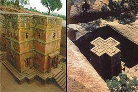

The Zagwe dynasty
Near the end of the tenth century CE an Agew (Agau) leader called Yodit (Gudit or Judith) brought the thousand–year
predominance of the Aksumite kingship to a conclusion. She conquered their last king and attempted to exterminate
the Christian religion. In Abyssinian traditional tales, she is known to be a great annihilator of churches contested
only by Ahmed Gran (Grañ) some six centuries later.
By this time, the nation of Aksum (Axum) had seized to control the seaborne commercial network in response to Islamic
growth and starting from mid-seventh century the ruling power had migrated down south and by late tenth century had been
established south of Tigray in such Agew districts as Lasta, Wag, Angot, and eventually Amhara. The movement included the
creation of military territories, which contributed as a central part of the population from which Aksumite ways, Semitic
dialect, and Christianity, diffused to the Agew peoples. By the tenth century, a post-aksumite Christian kingship had
appeared that ruled the northern highlands from current Eritrea to Shewa (Shoa) and the coast from old Adulis and Zeila
in modern Somalia. Military territories were also formed with the Sidama population of the central highlands and they
may have been the ancestors of Semitic-speaking such as the Argobba, Gafat, Gurage, and Hareri, although separate
settlements of Semitics from south east Arabia is also likely. Amhara in Shewa, during the eleventh and twelfth
centuries, appears to be the site of the restoration of Christian expanse. In the long term, this movement can
be viewed as a crucial advance in the amalgamation of Abyssinia because the indigenous Agew people, up to this
time under the a Semitic serfage, now acquired the upper hand and classes between the rulers and the ruled began to cease.
The Stronghold of the Zagwé era, which occurred from about 1137 to 1270 CE, is one of the most ambiguous in the history
of Ethiopia, for there was disappointingly few records found. Archaeology, so abundant for the Aksumite period,
has very little to furnish for that of the Zagwé dynasty. Unlike their Aksumite forefathers, they did not produce coins,
or create epigraphs, and, due to their distant allocation from the coast, made far less use of imported, dateable, articles.
The Zagwe dynasty came to end in 1270,
when Yekuno Amlak defeated and killed the last Zagwe king in battle.
The name of the dynasty is thought to come from the Ge'ez phrase Ze-Agaw, meaning "of Agaw" and refer to the Agaw people.
Its best-known king was Gebre Mesqel Lalibela, who is given credit for the rock-hewn churches of Lalibela.
David Buxton has stated that the area under the direct rule of the Zagwe kings "probably embraced the highlands of
modern Eritrea and the whole of Tigrai, extending southwards to Waag, Lasta and Damot (Wallo province) and thence
westwards towards Lake Tana (Beghemdir)."[1] Unlike the practice of later rulers of Ethiopia, Taddesse Tamrat argues
that under the Zagwe dynasty the order of succession was that of brother succeeding brother as king, based on the
Agaw laws of inheritance.
King Lalibela:1162-1221
History Around 960,
Queen Gudit destroyed the remnants of the Aksumite Empire causing
a shift in its temporal power centre that later
regrouped more to the south. For 40 years she ruled over those remnants, eventually passing them on to her descendants.
According to other Ethiopian traditional accounts, the last of her dynasty was overthrown by Mara Takla Haymanot in 1137.
He married a daughter of the last king of Axum, Dil Na'od putting control of Ethiopia in Agaw hands.
The Zagwe period is still shrouded in mystery; even the number of kings in this dynasty is disputed.
Some sources (such as the Paris Chronicle, and manuscripts Bruce 88, 91, and 93) give the names of eleven kings who ruled for 354 years;
others (among them the book Pedro Páez and Manuel de Almeida saw at Axum) list only five who ruled 143.
Henze reports the existence of at least one list containing 16 names.
According to Carlo Conti Rossini, the shorter length of this dynasty was the more likely one. He argues that a letter
received by the Patriarch of Alexandria John V shortly before 1150 from an unnamed Ethiopian monarch, in which the Patriarch
is asked for a new abuna because the current office holder was too old, was from Mara Takla Haymanot, who wanted the abuna
replaced because he would not endorse the new dynasty.
The mystery of the Zagwe dynasty is perhaps darkest around its replacement by the revived Solomonic dynasty under Yekuno Amlak. The name of the last Zagwe king is lost -- the surviving chronicles and oral traditions give his name as Za-Ilmaknun, which is clearly a pseudonym (Taddesse Tamrat translates it as "The Unknown, the hidden one"), employed soon after his reign by the victorious Solomonic rulers in an act of damnatio memoriae. Taddesse Tamrat believes that this last ruler was actually Yetbarak. The end of the Zagwe came when Yekuno Amlak, who proclaimed himself the descendant and rightful heir of Dil Na'od, and acting under the guidance of either Saint Tekle Haymanot or Saint Iyasus Mo'a, pursued the last king of the Zagwe and killed him at the church of St. Qirqos in Gaynt on the north side of the Bashilo River.[1]
Achievemnts
-  Established its capital at Roha (also called Lalibela), where they built a series of monolithic churches.
Downfall
The first one was problem of succession to the throne among the Zagwe princes most of the time they settled this issue by force of arms. They could not be able to arrange a smooth succession to the throne. Secondly, there had been strong opposition to the Zagwe kings throughout their rule. Those oppositions came from the decendents of Solomonic Dynasty. The zagwe leaders were considered random kings who were not decendent of the Solomonic dynasty. This opposition led to a huge rebelion.
The end of the Zagwe came when Yekuno Amlak , who never personally claimed to be descendant of Dil Na'od or King Solomon, and acting under the guidance of either Saint Tekle Haymanot or Saint Iyasus Mo'a, pursued the last king of the Zagwe and killed him at the Battle of Ansata.